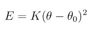

fix restrain command
Syntax
fix ID group-ID restrain keyword args ...
ID, group-ID are documented in fix command
restrain = style name of this fix command
one or more keyword/arg pairs may be appended
keyword = bond or angle or dihedral
bond args = atom1 atom2 Kstart Kstop r0 atom1,atom2 = IDs of 2 atoms in bond Kstart,Kstop = restraint coefficients at start/end of run (energy units) r0 = equilibrium bond distance (distance units) angle args = atom1 atom2 atom3 Kstart Kstop theta0 atom1,atom2,atom3 = IDs of 3 atoms in angle, atom2 = middle atom Kstart,Kstop = restraint coefficients at start/end of run (energy units) theta0 = equilibrium angle theta (degrees) dihedral args = atom1 atom2 atom3 atom4 Kstart Kstop phi0 atom1,atom2,atom3,atom4 = IDs of 4 atoms in dihedral in linear order Kstart,Kstop = restraint coefficients at start/end of run (energy units) phi0 = equilibrium dihedral angle phi (degrees)
Examples
fix holdem all restrain bond 45 48 2000.0 2000.0 2.75 fix holdem all restrain dihedral 1 2 3 4 2000.0 2000.0 120.0 fix holdem all restrain bond 45 48 2000.0 2000.0 2.75 dihedral 1 2 3 4 2000.0 2000.0 120.0 fix texas_holdem all restrain dihedral 1 2 3 4 0.0 2000.0 120.0 dihedral 1 2 3 5 0.0 2000.0 -120.0 dihedral 1 2 3 6 0.0 2000.0 0.0
Description
Restrain the motion of the specified sets of atoms by making them part of a bond or angle or dihedral interaction whose strength can vary over time during a simulation. This is functionally similar to creating a bond or angle or dihedral for the same atoms in a data file, as specified by the read_data command, albeit with a time-varying pre-factor coefficient, and except for exclusion rules, as explained below.
For the purpose of forcefield parameter-fitting or mapping a molecular potential energy surface, this fix reduces the hassle and risk associated with modifying data files. In other words, use this fix to temporarily force a molecule to adopt a particular conformation. To create a permanent bond or angle or dihedral, you should modify the data file.
Note
Adding a bond/angle/dihedral with this command does not apply the exclusion rules and weighting factors specified by the special_bonds command to atoms in the restraint that are now bonded (1-2,1-3,1-4 neighbors) as a result. If they are close enough to interact in a pair_style sense (non-bonded interaction), then the bond/angle/dihedral restraint interaction will simply be superposed on top of that interaction.
The group-ID specified by this fix is ignored.
The second example above applies a restraint to hold the dihedral angle formed by atoms 1, 2, 3, and 4 near 120 degrees using a constant restraint coefficient. The fourth example applies similar restraints to multiple dihedral angles using a restraint coefficient that increases from 0.0 to 2000.0 over the course of the run.
Note
Adding a force to atoms implies a change in their potential energy as they move due to the applied force field. For dynamics via the run command, this energy can be added to the system’s potential energy for thermodynamic output (see below). For energy minimization via the minimize command, this energy must be added to the system’s potential energy to formulate a self-consistent minimization problem (see below).
In order for a restraint to be effective, the restraint force must typically be significantly larger than the forces associated with conventional forcefield terms. If the restraint is applied during a dynamics run (as opposed to during an energy minimization), a large restraint coefficient can significantly reduce the stable timestep size, especially if the atoms are initially far from the preferred conformation. You may need to experiment to determine what value of K works best for a given application.
For the case of finding a minimum energy structure for a single molecule with particular restratins (e.g. for fitting forcefield parameters or constructing a potential energy surface), commands such as the following may be useful:
# minimize molecule energy with restraints
velocity all create 600.0 8675309 mom yes rot yes dist gaussian
fix NVE all nve
fix TFIX all langevin 600.0 0.0 100 24601
fix REST all restrain dihedral 2 1 3 8 0.0 5000.0 ${angle1} dihedral 3 1 2 9 0.0 5000.0 ${angle2}
fix_modify REST energy yes
run 10000
fix TFIX all langevin 0.0 0.0 100 24601
fix REST all restrain dihedral 2 1 3 8 5000.0 5000.0 ${angle1} dihedral 3 1 2 9 5000.0 5000.0 ${angle2}
fix_modify REST energy yes
run 10000
# sanity check for convergence
minimize 1e-6 1e-9 1000 100000
# report unrestrained energies
unfix REST
run 0
The bond keyword applies a bond restraint to the specified atoms using the same functional form used by the bond_style harmonic command. The potential associated with the restraint is

with the following coefficients:
- K (energy/distance^2)
- r0 (distance)
K and r0 are specified with the fix. Note that the usual 1/2 factor is included in K.
The angle keyword applies an angle restraint to the specified atoms using the same functional form used by the angle_style harmonic command. The potential associated with the restraint is
with the following coefficients:
- K (energy/radian^2)
- theta0 (degrees)
K and theta0 are specified with the fix. Note that the usual 1/2 factor is included in K.
The dihedral keyword applies a dihedral restraint to the specified atoms using a simplified form of the function used by the dihedral_style charmm command. The potential associated with the restraint is

with the following coefficients:
- K (energy)
- n = 1
- d (degrees) = phi0 + 180
K and phi0 are specified with the fix. Note that the value of n is hard-wired to 1. Also note that the energy will be a minimum when the current dihedral angle phi is equal to phi0.
Restart, fix_modify, output, run start/stop, minimize info:
No information about this fix is written to binary restart files.
The fix_modify energy option is supported by this fix to add the potential energy associated with this fix to the system’s potential energy as part of thermodynamic output.
The fix_modify respa option is supported by this fix. This allows to set at which level of the r-RESPA integrator the fix is adding its forces. Default is the outermost level.
Note
If you want the fictitious potential energy associated with the added forces to be included in the total potential energy of the system (the quantity being minimized), you MUST enable the fix_modify energy option for this fix.
This fix computes a global scalar, which can be accessed by various output commands. The scalar is the potential energy for all the restraints as discussed above. The scalar value calculated by this fix is “extensive”.
No parameter of this fix can be used with the start/stop keywords of the run command.
Restrictions
none
Related commands: none
Default: none